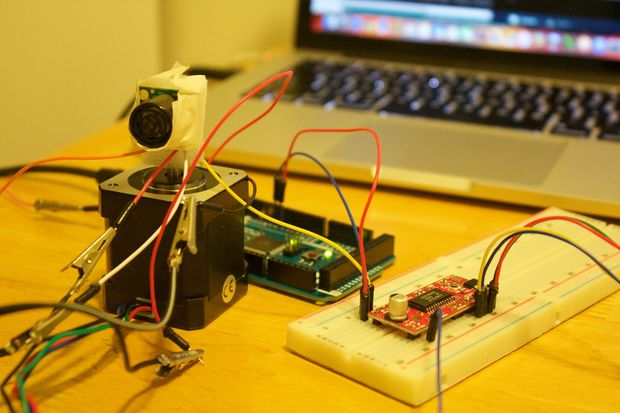

Projects
2015 ~ present
2D Ultrasonic mapping sensor

I worked on a landmine detection quadcopter with college Yekalo Aberha. Mr. Aberha and I, coded and build a lidar two diminsional mapping sensor. To create a graph of points to repersent what the sensor is resiving which was edges of objects.
- x = r × cos( θ )
- y = r × sin( θ )
We found out that the sensor was not working because we needen to conver the rotation of the sensor, into (x,y) coordiates.
For pictures of the project
Instuctables
Ubuntu home server

Code name "Mineturtle" and its a work in progress
I build a home media server for sharing video on the Local Area Network (LAN), "LEGALY" downloading movies for my own personal enjoymen, and it also acts a FTP server for storing random computer files that I want ready access to.This project got me into linux operating system which I now reather like a lot. I its a my linux testing ground for software that looks cool, and will work for my home.
9:46 PM Thursday, February 25, 2016 (PST)